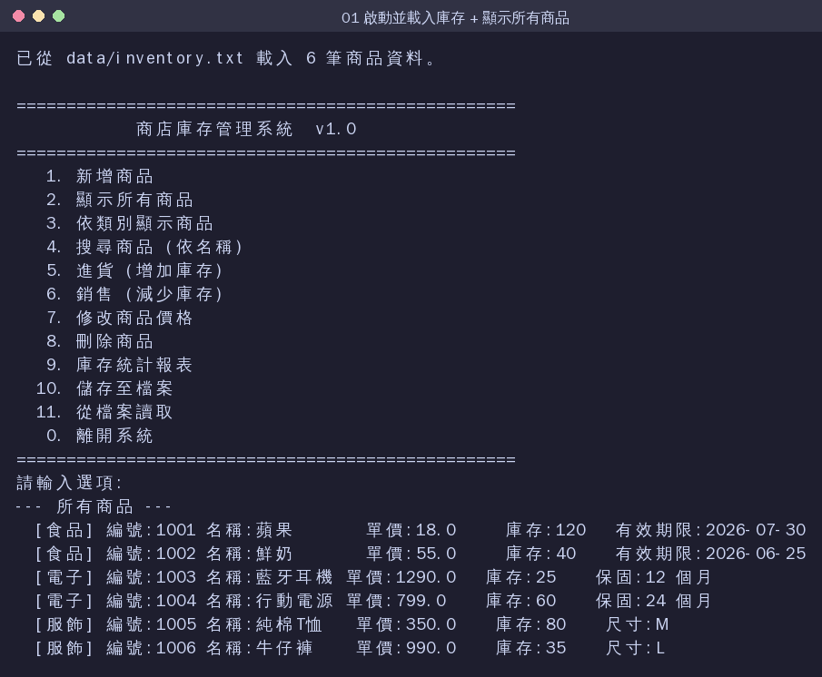
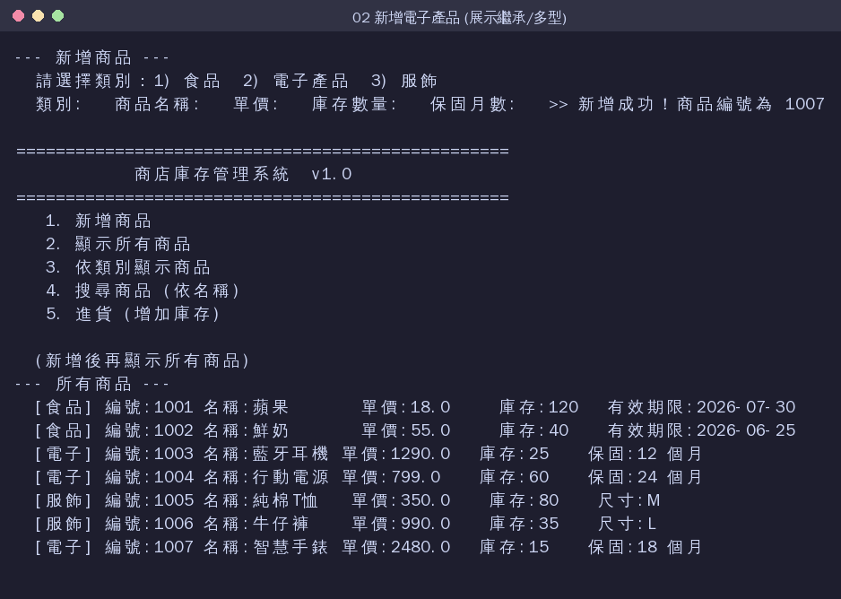
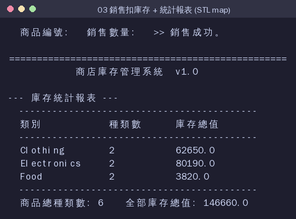
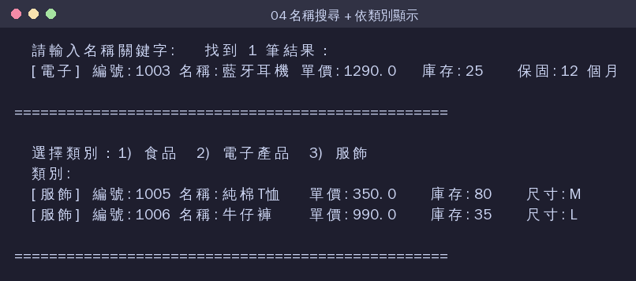

GitHub Repo：
https://github.com/jamiechu218/final_project
本專題以 C++ 物件導向 設計一套於 終端機 (Terminal) 操作的 商店庫存管理系統。商店中的商品分為「食品、電子產品、服飾」三大類， 使用者可透過文字選單進行新增、查詢、進貨、銷售、修改、刪除與統計， 所有資料以檔案永久保存，下次開啟程式時自動載入。
| 要求 | 本專題實作方式 |
|---|---|
| 1. 呈現 C++ 類別繼承 | 抽象基底類別 Product 衍生出 Food、
Electronics、Clothing，並以虛擬函式達成多型 |
| 2. 讀檔與寫檔 | Inventory::saveToFile() 寫檔、loadFromFile() 讀檔；
啟動自動載入、離開自動存檔 |
| 3. 使用 STL 類別庫 | vector、map、unique_ptr、
string、algorithm、sstream |
| 4. 終端機 UI 操作介面 | main.cpp 提供 12 項功能的文字選單與輸入錯誤處理 |
| 5. 規格說明與開發流程 | docs/SPECIFICATION.md、docs/DEVELOPMENT.md |
| 6. 完整說明文件 | README、規格書、開發流程與本份報告 |
系統核心是一個三層的繼承架構。Product 為抽象基底類別，
定義所有商品共用的屬性與三個純虛擬函式；三個衍生類別各自擁有專屬屬性並覆寫虛擬函式：
Product (抽象基底類別)
├ id_ name_ price_ quantity_
├ category() = 0 ← 純虛擬
├ displayDetail() = 0 ← 純虛擬 (多型)
└ serialize() = 0 ← 純虛擬
│ public 繼承
┌──────────────┼───────────────┐
Food Electronics Clothing
(有效期限) (保固月數) (尺寸)
Inventory 以
std::vector<std::unique_ptr<Product>> 持有所有商品，
僅透過基底指標呼叫 displayDetail()，即由實際型別決定輸出格式，
這就是 多型 (polymorphism)。
| 編號 | 功能 | 說明 |
|---|---|---|
| 1 | 新增商品 | 選擇類別後輸入名稱、單價、數量與專屬欄位，自動配發編號 |
| 2 | 顯示所有商品 | 依實際類別以不同格式列出（多型展示） |
| 3 | 依類別顯示 | 只列出食品 / 電子 / 服飾其中一類 |
| 4 | 搜尋商品 | 依名稱關鍵字做模糊比對 |
| 5 | 進貨 | 對指定編號增加庫存 |
| 6 | 銷售 | 減少庫存；庫存不足則拒絕，避免負庫存 |
| 7 | 修改價格 | 變更指定商品單價 |
| 8 | 刪除商品 | 以 std::remove_if 移除指定商品 |
| 9 | 統計報表 | 以 std::map 統計各類別種類數與庫存總值 |
| 10 | 儲存至檔案 | 將庫存寫入 data/inventory.txt |
| 11 | 從檔案讀取 | 重新由檔案載入庫存 |
| 0 | 離開系統 | 自動存檔後結束 |
程式啟動時自動由 data/inventory.txt 讀入 6 筆商品。
注意三種商品以不同格式顯示（食品→有效期限、電子→保固、服飾→尺寸），即為多型。

新增一台「智慧手錶」，系統自動配發編號 1007；再次顯示可見新商品已加入清單。

對編號 1001（蘋果）銷售 30 件後，庫存自動扣減；統計報表以
std::map 彙整各類別的種類數與庫存總值。

以關鍵字「耳機」搜尋到藍牙耳機；並示範依「服飾」類別篩選顯示。

$ make # 以 g++ (C++14) 編譯，-Wall -Wextra 無警告 $ ./inventory # 執行（或 make run） $ make clean # 清除編譯產物
本專題完整實踐了 C++ 的類別繼承與多型、STL 容器、檔案讀寫 以及終端機 UI。透過抽象基底類別與虛擬函式的設計，未來若要新增商品類別 （例如「書籍」），只需新增一個衍生類別並實作三個虛擬函式即可， 不必改動既有程式，展現了物件導向「易擴充、易維護」的優點。
完整原始碼：https://github.com/jamiechu218/final_project